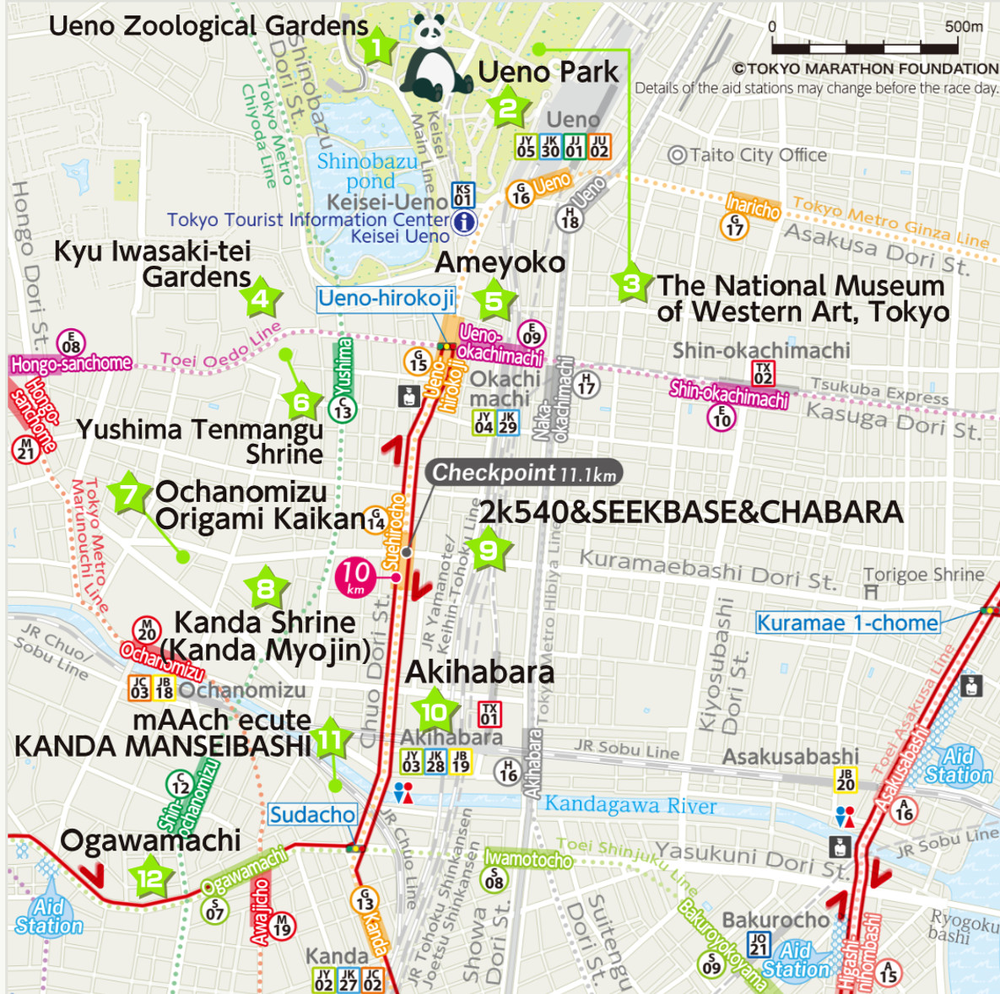
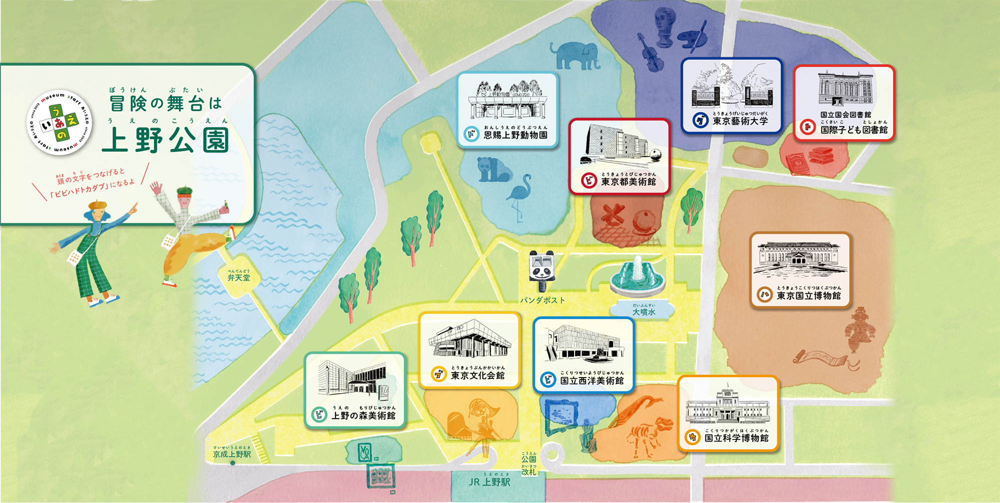
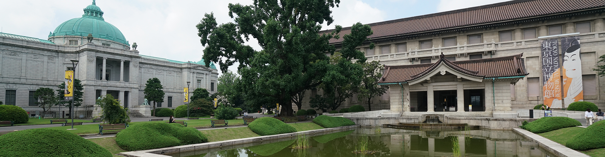
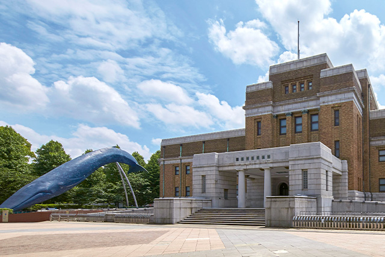
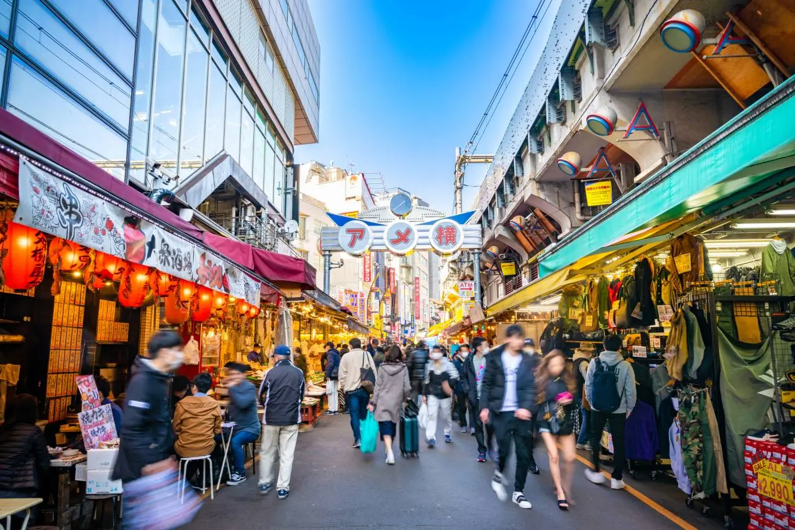
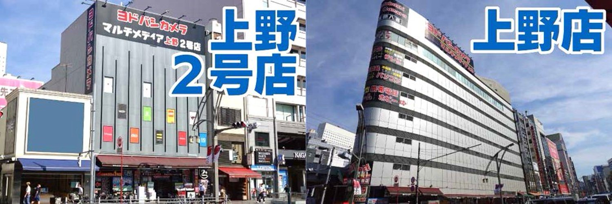
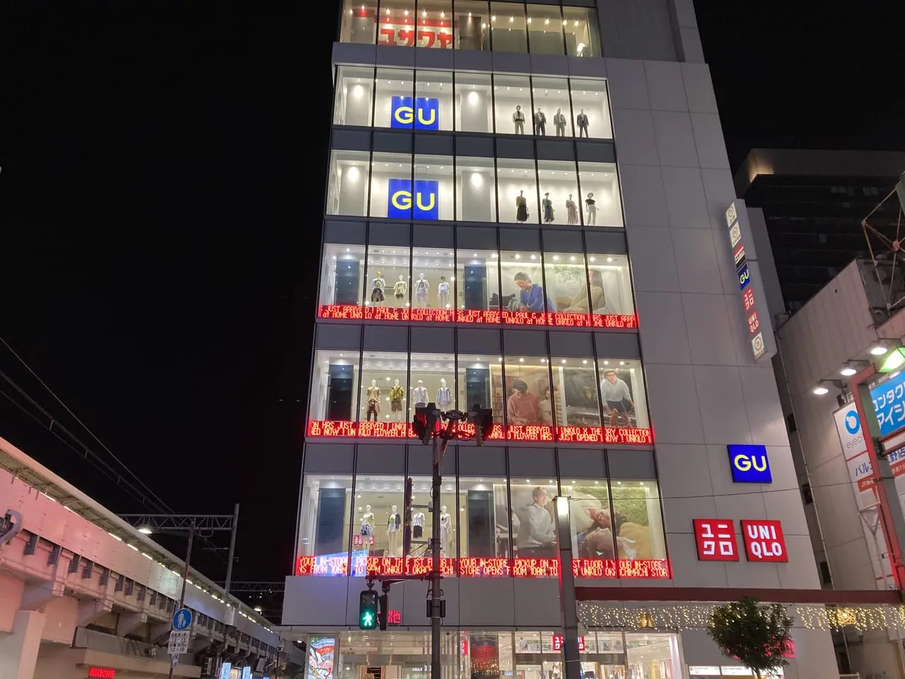
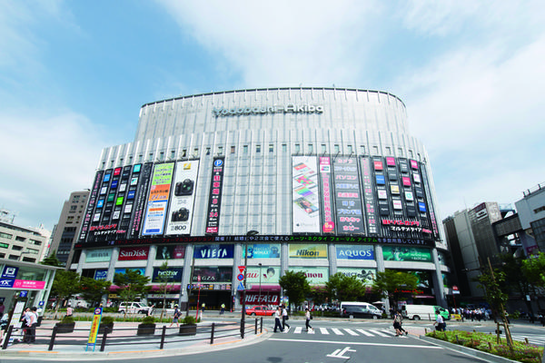

日本語
日本語
 简体中文
简体中文
Ueno and Akihabara Area
If you come to Tokyo, Ueno is a must-visit place.
Day 1: Ueno, Akihabara
Ueno Station is at the heart of Tokyo. It’s easily accessible and convenient for transportation. Not only are there many tourist spots, but shopping is also very easy here.
Culture and Art at Ueno Park
Ueno Onshi Park is the oldest park in Japan. Within the park, there are nine cultural facilities, including the National Museum, the National Museum of Nature and Science, Ueno Royal Museum, Ueno Zoo, a library, and the Tokyo Bunka Kaikan. You can also enjoy a pond with boats, a large fountain, and the famous statue of Saigo Takamori!
National Museum
The museum with the longest history in Japan
Museum of Nature and Science
A place where you can encounter the mysteries of space and Earth. The landmarks are a large whale and a steam locomotive (SL). There are two buildings: the Japan Pavilion and the Earth Pavilion, where exhibits range from microorganisms to rockets. You can see impressive dinosaur fossils, a whale skeleton, and stuffed animals.
Ueno Zoo
Located in the heart of Tokyo, Ueno Zoo is an urban zoo that maintains a natural environment and is home to approximately 300 species and 3,000 animals.
Ueno Park
With an area of 530,000 square meters, Ueno Park is a vast and historical site. In spring, it's famous for cherry blossoms, attracting tourists from both Japan and abroad, making it one of Tokyo’s representative tourist spots.

Shopping in Ueno: Ameyoko Market, Akihabara
Ameyoko Market
Ameyoko Market runs for about 500 meters under the elevated tracks on the west side between JR Ueno Station and Okachimachi Station. It originated as a place where surplus goods from the U.S. military were sold cheaply after the war. Today, it’s a vibrant spot with over 400 stores, offering a wide variety of imported goods, seafood, daily necessities, cosmetics, and accessories at great prices.
Yodobashi Camera Ueno Store
Yodobashi Camera offers not only Japanese electronics but also watches, PCs, cosmetics, toys, accessories, and more. Many staff members are available to provide product explanations and customer service in English, Chinese, and Korean. Tax exemption services are also offered.
UNIQLO and GU at Okachimachi Station
A long-awaited "UNIQLO" flagship store has opened in the Ueno/Okachimachi area, with a space of about 860 tsubo (around 2,842 square meters). It’s a great place to buy clothes for the family.
Akihabara
After shopping at UNIQLO, you can walk to Akihabara. Akihabara is globally renowned as the electronics town and the hub for games, anime, and pop culture! Not only can you enjoy shopping, but you can also meet next-generation idols or enjoy themed cafes and maid cafes!

Yodobashi Camera Akihabara Store
This large electronics retailer is the core of the "Yodobashi Akiba" shopping complex located in front of JR Akihabara Station. It’s a popular shopping destination not only for domestic customers but also for many international tourists. The third floor has a corner dedicated to Japanese souvenirs and tourist-oriented products. You can buy Japanese electronics like rice cookers that can be used abroad here.
mAAch ecute KANDA MANSEIBASHI
This shopping spot was created using the "Manseibashi Viaduct," built in 1912. It has a unique atmosphere with its brick and arch design, housing stylish shops such as boutiques, restaurants, and a craft beer specialty store.